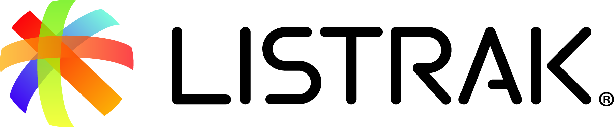
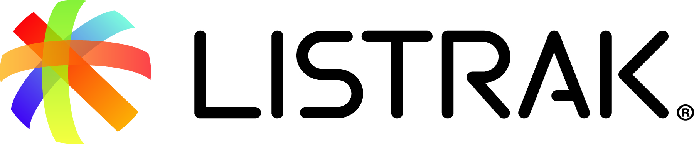

CPOSC 2019
ELEVEN YEARS OF OPEN SOURCE
- WHEN
- September 21, 2019
- WHERE
- The Ware Center
- Downtown Lancaster PA
Technology is evolving with unprecedented speed, which means it's more important than ever for those on the front lines of tech to gather, converse and share their experiences. CPOSC offers technologists passionate about open source technologies that very opportunity through presentations, panel discussions, lightning talks, informal designated conversation topic areas, and more.
As Downtown Lancaster's arts, music, and dining scenes have garnered national recognition over the past decade, we firmly believe that the Lancaster tech scene is in the midst of its own big boom. By moving downtown beginning in 2016, we wanted CPOSC to be at the center of this tech explosion. As a bonus, it's an easy walk from the Ware Center to the CPOSC After Party at Tellus360!
Since its start, CPOSC has featured experienced technologists speaking on a variety of open source topics, from introduction level to deep dives and from emerging technologies to those tried-and-tested. You can also find stories of lessons learned with OSS, as well as niche industries like open source hardware. There is something for everyone at CPOSC.


 


CPOSC is dedicated to a harassment-free conference experience for everyone. Our anti-harassment policy can be found at: